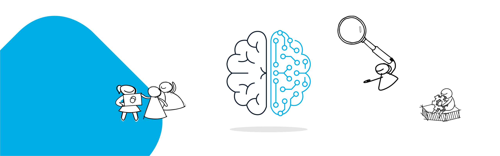

Bloom Tech
An Introduction To Artificial Intelligence And Machine Learning

What is AI and ML?
Many companies will market their systems or services as “powered by AI” when it’s not often the case. We will always find these instances of gimmicky marketing, so it is helpful to first understand what is AI and ML, and the different terms, as there are many relevant use cases of AI and ML in our world today.
Artificial Intelligence is a technique for building systems that mimic human behavior or decision-making.
Machine Learning is a subset of AI that uses data to solve tasks. These solvers are trained models of data that learn based on the information provided to them. This information is derived from probability theory and linear algebra. ML algorithms use our data to learn and automatically solve predictive tasks.
Deep Learning is a subset of machine learning which relies on multilayered neural networks to solve these tasks.
The Use Cases for AI
From transportation, medicine, natural language processing, and computer vision, ML and AI have made a global impact on the market capital. A recent study also confirms that in the future, deep learning will produce more market capital than the internet.
Harshit Dohare © All rights reserved 2022